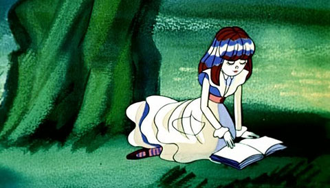
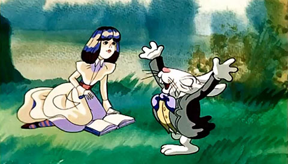

Приветствие Глава I Глава VI Глава VII
Вдруг мимо пробежал белый кролик с красными глазами.Конечно, ничего удивительного в этом не было. Правда, Кролик на бегу говорил:
- Ах, боже мой, боже мой! Я опаздываю.
Но и это не показалось Алисе особенно странным. (Вспоминая об этом позже, она подумала, что ей следовало бы удивиться, однако в тот миг все казалось ей вполне естественным.) Но, когда Кролик вдруг вынул часы из жилетного кармана и, взглянув на них, помчался дальше, Алиса вскочила на ноги. Ее тут осенило: ведь никогда раньше она не видела кролика с часами, да еще с жилетным карманом в придачу! Сгорая от любопытства, она побежала за ним по полю и только-только успела заметить, что он юркнул в нору под изгородью.
В тот же миг Алиса юркнула за ним следом, не думая о том, как же она будет выбираться обратно.
 